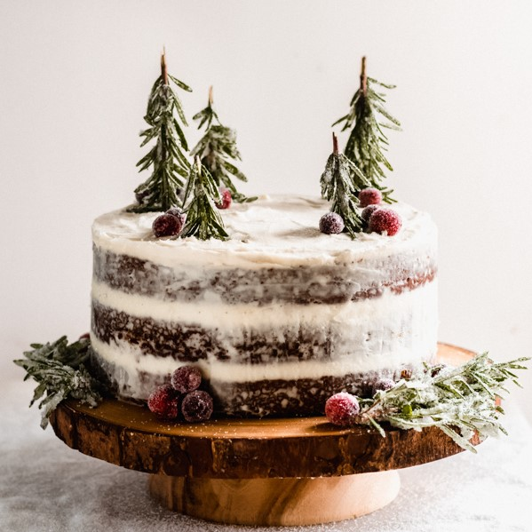

As a professional chef and baker, I’m sharing my master cake recipes and cupcake creations including step-by-step cake videos. You’ll find my Vanilla Birthday Cake recipe, Best-Ever Chocolate Cake, Carrot Cake recipe, even a 3 Layer Microwave Cake, and many more. Plus, get my Best-Ever Vanilla Buttercream Frosting, Homemade Fondant recipes, and even make your own ingredients like butter, cake flour, and brown sugar.